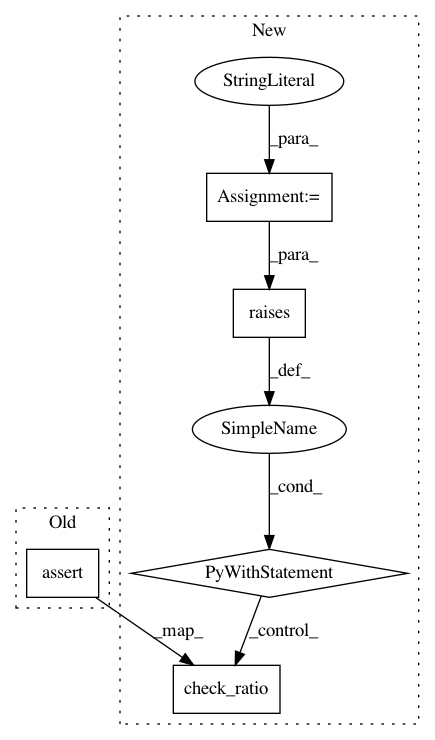

488a0e81a89b360d77c6cd3e7948b8e667e87775,imblearn/utils/tests/test_validation.py,,test_ratio_dict_error,#,98
Before Change
def test_ratio_dict_error():
y = np.array([1] * 50 + [2] * 100 + [3] * 25)
ratio = {1: -100, 2: 50, 3: 25}
assert_raises_regex(ValueError, "in a class cannot be negative.",
check_ratio, ratio, y, "under-sampling")
ratio = {10: 10}
assert_raises_regex(ValueError, "are not present in the data.",
check_ratio, ratio, y, "over-sampling")
ratio = {1: 45, 2: 100, 3: 70}
After Change
with raises(ValueError, match="are not present in the data."):
check_ratio(ratio, y, "over-sampling")
ratio = {1: 45, 2: 100, 3: 70}
error_regex = ("With over-sampling methods, the number of samples in a"
" class should be greater or equal to the original number"
" of samples. Originally, there is 50 samples and 45"
" samples are asked.")
with raises(ValueError, match=error_regex):
check_ratio(ratio, y, "over-sampling")
error_regex = ("With under-sampling methods, the number of samples in a"
" class should be less or equal to the original number of"
" samples. Originally, there is 25 samples and 70 samples"
" are asked.")
In pattern: SUPERPATTERN
Frequency: 3
Non-data size: 5
Instances
Project Name: scikit-learn-contrib/imbalanced-learn
Commit Name: 488a0e81a89b360d77c6cd3e7948b8e667e87775
Time: 2017-08-24
Author: mailsik@gmail.com
File Name: imblearn/utils/tests/test_validation.py
Class Name:
Method Name: test_ratio_dict_error
Project Name: scikit-learn-contrib/imbalanced-learn
Commit Name: 488a0e81a89b360d77c6cd3e7948b8e667e87775
Time: 2017-08-24
Author: mailsik@gmail.com
File Name: imblearn/utils/tests/test_validation.py
Class Name:
Method Name: test_ratio_float_error
Project Name: scikit-learn-contrib/imbalanced-learn
Commit Name: 488a0e81a89b360d77c6cd3e7948b8e667e87775
Time: 2017-08-24
Author: mailsik@gmail.com
File Name: imblearn/utils/tests/test_validation.py
Class Name:
Method Name: test_check_ratio_error